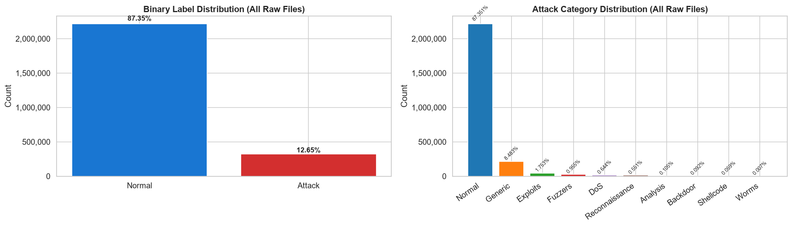
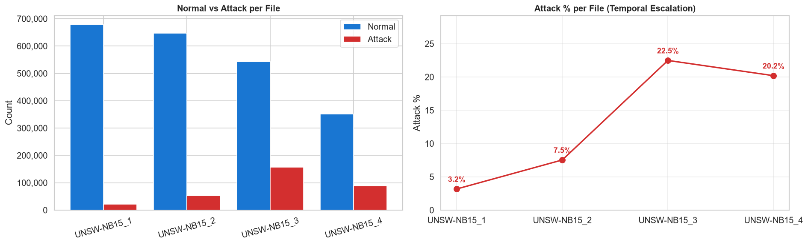
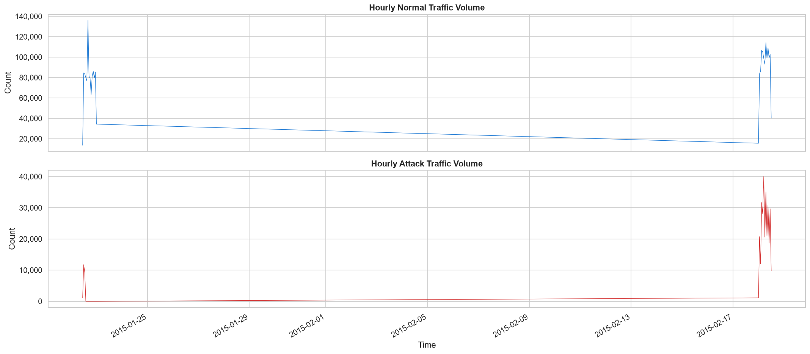
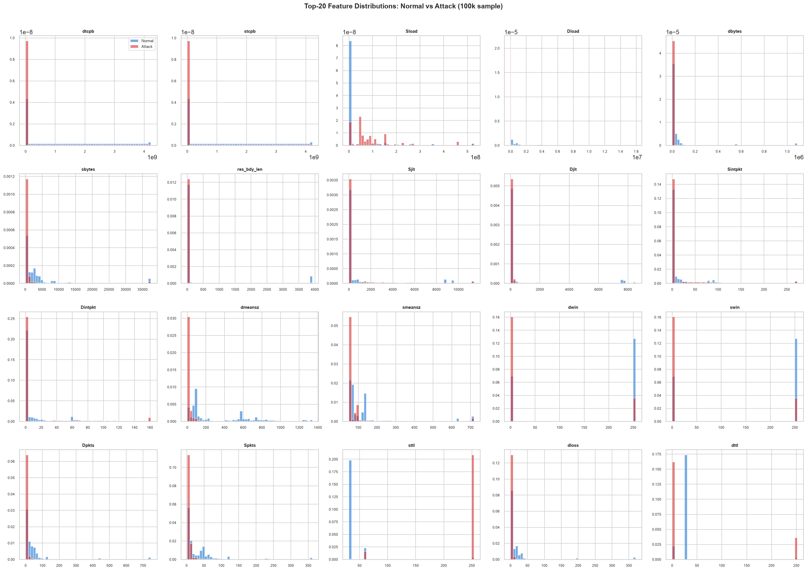
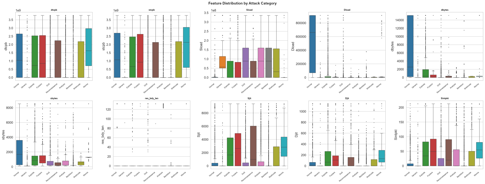
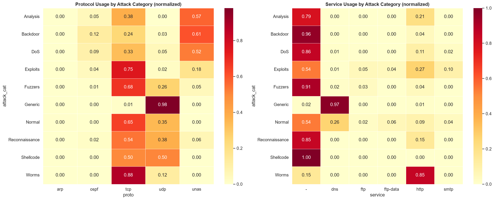
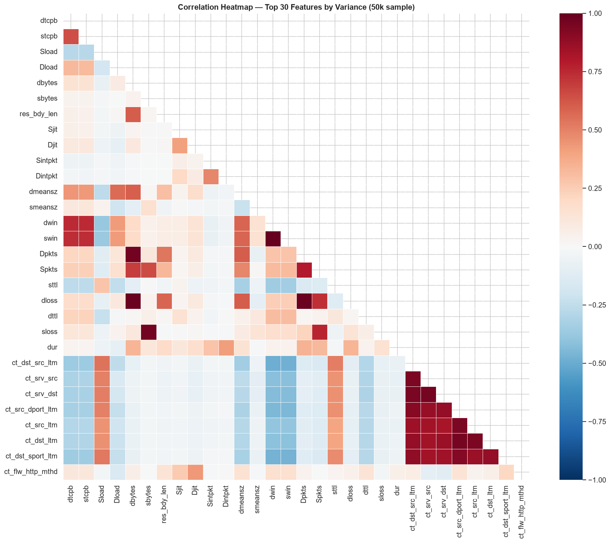
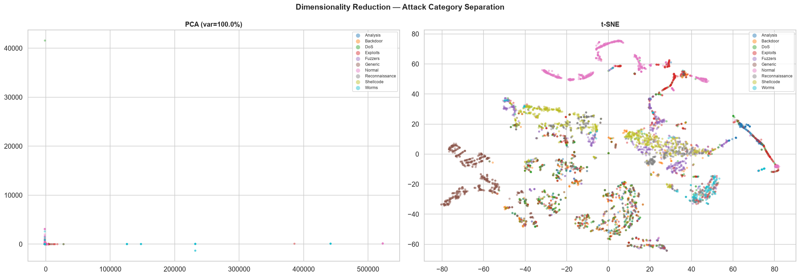
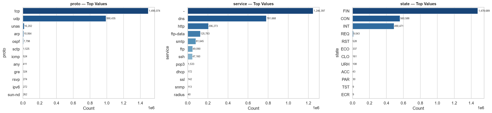
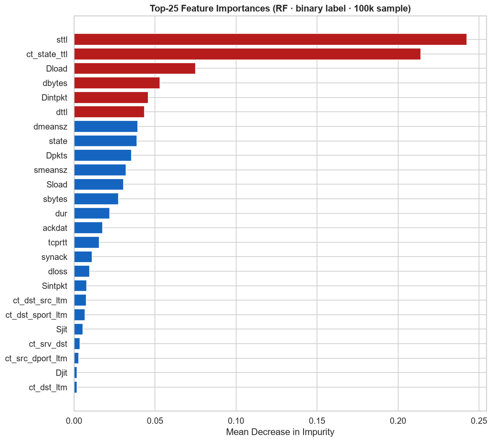

Phase 1
Exploratory Data Analysis
Statistical profiling of the UNSW-NB15 network flow dataset: 2.54 million records captured over 28 days across 4 packet capture files. We examine class distributions, feature statistics, correlations, dimensionality, and attack category breakdown.
✓ Complete📋 Dataset Overview
2,540,047
Total Records
321,283
Attack Flows (12.65%)
2,218,764
Normal Flows (87.35%)
6.91×
Imbalance Ratio
49
Raw Features
28 days
Jan 22 – Feb 18, 2015
Per-File Breakdown
| File | Total Records | Normal | Attack | Attack % |
|---|---|---|---|---|
| UNSW-NB15_1.csv | 700,001 | 677,786 | 22,215 | 3.17% |
| UNSW-NB15_2.csv | 700,001 | 647,252 | 52,749 | 7.54% |
| UNSW-NB15_3.csv | 700,001 | 542,576 | 157,425 | 22.49% |
| UNSW-NB15_4.csv | 440,044 | 351,150 | 88,894 | 20.20% |
| Total | 2,540,047 | 2,218,764 | 321,283 | 12.65% |
Attack density varies across files.
File 1 has only 3.17% attacks while Files 3 and 4 exceed 20%. This temporal variation reflects different
capture sessions and is a source of the train/test distribution shift observed later in the project.
🎯 Attack Category Distribution
| Category | Count | % of Dataset | % of Attacks |
|---|---|---|---|
| Normal | 2,218,764 | 87.35% | — |
| Generic | 215,481 | 8.48% | 67.08% |
| Exploits | 44,525 | 1.75% | 13.86% |
| Fuzzers | 24,246 | 0.95% | 7.55% |
| DoS | 16,353 | 0.64% | 5.09% |
| Reconnaissance | 13,987 | 0.55% | 4.35% |
| Analysis | 2,677 | 0.11% | 0.83% |
| Backdoor | 2,329 | 0.09% | 0.72% |
| Shellcode | 1,511 | 0.06% | 0.47% |
| Worms | 174 | 0.007% | 0.05% |

Binary Class Distribution
Pie/bar chart showing the stark 87.35% normal vs 12.65% attack split across the full dataset.
This 6.91× imbalance ratio necessitates SMOTE resampling before model training to prevent
classifiers from defaulting to a "predict normal" strategy.

Per-File Attack Distribution
Stacked bar chart comparing normal vs attack counts across all four capture files.
Attack density grows from 3.2% (File 1) to over 20% (Files 3–4), indicating temporal
non-stationarity in the capture campaign — a key reason for val/test distribution shift.
🔍 Null & Missing Value Analysis
All 49 raw features were scanned for nulls. Only three features had missing values — both HTTP-related fields that are structurally empty for non-HTTP flows.
| Feature | Null Count | % Missing | Treatment |
|---|---|---|---|
ct_flw_http_mthd | 1,348,145 | 53.1% | Fill with 0 (no HTTP method) |
is_ftp_login | 1,429,879 | 56.3% | Fill with 0 (not FTP) |
| All other features | 0 | 0% | — |
Structural missingness, not random.
Both features are protocol-specific —
ct_flw_http_mthd applies only to HTTP flows and
is_ftp_login only to FTP. Zero-filling is semantically correct (absent field = not applicable).
Neither feature made the final 37-feature selection after correlation and importance filtering.
⏱️ Temporal Traffic Analysis

Temporal Traffic Density
Flow density over the 28-day capture window (Jan 22 – Feb 18, 2015). Clear periodic patterns
reflect business-hours traffic cycles. Attack traffic shows bursty spikes rather than uniform
distribution, consistent with scripted attack campaigns. The temporal non-uniformity motivates
chronological train/val/test splitting to prevent leakage.
📈 Feature Distribution Analysis

Feature Histograms (37 Numeric Features)
Distribution plots for all 37 numeric features. Most traffic volume features (
sbytes,
dbytes, Sload, Dload) are heavily right-skewed with
long tails driven by high-volume flows. TTL features (sttl, dttl)
show discrete clusters corresponding to OS-specific defaults (64, 128, 255), which are strong
attack discriminators. Timing features like dur and Sintpkt span
multiple orders of magnitude, requiring log-normalization.

Feature Boxplots by Attack Category
Side-by-side boxplots of key features grouped by attack category. Generic attacks show
distinctly elevated
Dpkts/dloss. DoS attacks have very high
Sload/sbytes. Normal flows cluster tightly on most features,
confirming that attack categories have characteristic signatures that tree models can exploit.

Attack Category Feature Heatmap
Median feature values per attack class, normalised to [0,1]. Strong per-class patterns
are visible: Worms cluster on connection-tracking features; Shellcode has elevated
res_bdy_len; Reconnaissance shows distinctive TTL behaviour. This confirms
that multiclass separation is learnable but difficult for rare categories like Worms (174 samples).
🔗 Feature Correlation Analysis

Pearson Correlation Heatmap (37 Numeric Features)
Heatmap of absolute Pearson correlations between all 37 features. Eight feature pairs
exceed r = 0.95 (shown below). The dominant block of high correlation involves packet/byte
count features —
Dpkts, dloss, dbytes — which carry
redundant information. These were candidates for removal during feature selection but retained
because individual features still carry unique signal in tree-based models.
High-Correlation Feature Pairs (r > 0.95)
| Feature A | Feature B | Pearson r | Decision |
|---|---|---|---|
dwin | swin | 0.9973 | Both retained (different direction) |
Dpkts | dloss | 0.9910 | Both retained |
dloss | dbytes | 0.9908 | Both retained |
Dpkts | dbytes | 0.9682 | Both retained |
sloss | sbytes | 0.9629 | Both retained |
ct_src_dport_ltm | ct_dst_ltm | 0.9599 | Both retained |
ct_srv_dst | ct_srv_src | 0.9572 | Both retained |
ct_dst_src_ltm | ct_srv_dst | 0.9509 | Both retained |
🗺️ Dimensionality Reduction

PCA (top) and t-SNE (bottom) Visualisations — Coloured by Class
PCA: 99.98% of variance is explained by the first 2 components, indicating
the feature space has very strong linear structure. Normal and attack flows form partially
separable clusters even in 2D. t-SNE: Non-linear projection reveals tighter,
more distinct attack clusters — Exploits and Generic separate well from Normal; Worms and
Shellcode remain embedded within the normal cloud (explaining their low test F1 for all models).
The 99.98% PCA variance ratio confirms that a relatively low-dimensional representation
captures nearly all signal, supporting aggressive feature selection.
🏷️ Categorical Feature Analysis

Categorical Feature Distributions (proto, service, state)
Bar charts of the three categorical features.
proto (135 unique values) is dominated
by TCP and UDP, with many rare protocols appearing almost exclusively in attack traffic.
service (13 values) includes HTTP, DNS, FTP, and an "-" category
for unlabelled services. state (16 values) encodes TCP state machine transitions —
states like FIN and CON dominate normal traffic, while INT
and REQ appear disproportionately in attack flows. All three are ordinal-encoded
for model training.
| Feature | Unique Values | Encoding Strategy | Notes |
|---|---|---|---|
proto | 135 | Ordinal (frequency-ordered) | TCP, UDP dominate; many attack-specific protocols |
service | 13 | Ordinal | Includes "-" for non-classified services |
state | 16 | Ordinal | TCP state machine states — strong discriminator |
⭐ Feature Importance (Random Forest Probe)

Top-20 Feature Importances from a Quick Random Forest Probe
A shallow RF (100 trees, max_depth=10) trained on a 50k subsample reveals the most
discriminative features. Top features:
sttl (source TTL),
ct_state_ttl (state/TTL combination), Dload (destination load),
dbytes, Dintpkt (destination inter-packet time), and dttl
(destination TTL). TTL-based features rank highest because attackers often use non-standard TTL
values or tunnel traffic that alters TTL counts — a reliable OS fingerprint.
Connection tracking features (ct_dst_src_ltm, ct_dst_sport_ltm)
capture session-level behaviour that helps distinguish scanning from legitimate activity.
The top 20 features are used as the feature selection shortlist for preprocessing.
🔑 Phase 1 — Key Findings
- Severe class imbalance: 87.35% normal vs 12.65% attack (6.91× ratio) — SMOTE resampling required.
- Temporal non-stationarity: Attack density rises from 3.2% (File 1) to 22.5% (File 3), introducing val/test distribution shift.
- 99.98% PCA variance in 2 components — highly structured, low-intrinsic-dimensionality feature space.
- 8 strongly correlated pairs (r > 0.95) — primarily packet/byte count features; all retained for tree-based models.
- Top discriminators:
sttl,ct_state_ttl,Dload,dttl— TTL-based features fingerprint OS/attacker behaviour effectively. - Rare attack classes: Worms (174), Shellcode (1,511), Analysis (2,677) — will likely yield F1≈0 for all models due to extreme scarcity.
- No zero-variance features found — all 37 retained features carry signal.